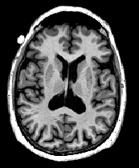
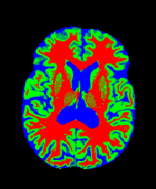

⚠️ Problem Statement
Manual MRI segmentation is time-intensive and subjective. In clinical settings, precise tissue delineation is vital for diagnosing tumors and lesions. This project automates voxel-wise classification to assist radiologists with high-speed, objective analysis.
🛠️ Methodology
- Architecture: Configurable U-Net with depths 1-4.
- Loss Function: Optimized with
CrossEntropyLoss. - Data: Normalization of the IBSR medical dataset.
🧬 Tech Specs
- Encoder-Decoder with Skip Connections.
- Implementation of Adam Optimizer (1e-4).
- Evaluation via Dice Score.
Inference Pipeline
From raw medical data to high-precision semantic masks.

Input MRI
➔
CONV-BLOCKS
↓↓↓
SKIP-CONN
↓↓↓
UPSAMPLING
↓↓↓
SKIP-CONN
↓↓↓
UPSAMPLING
U-Net Model
➔

Output Mask